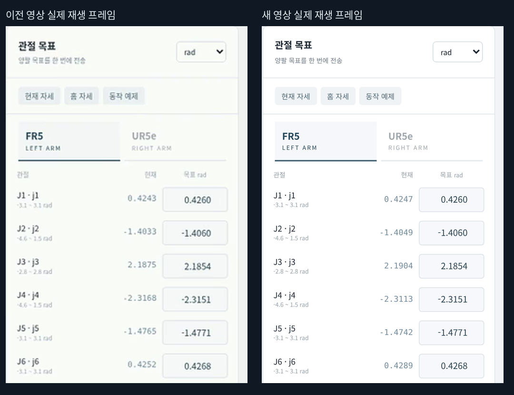
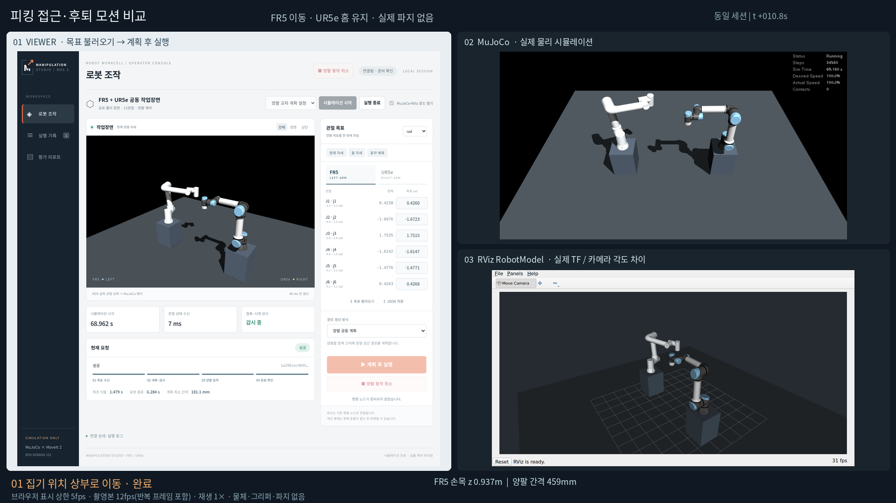
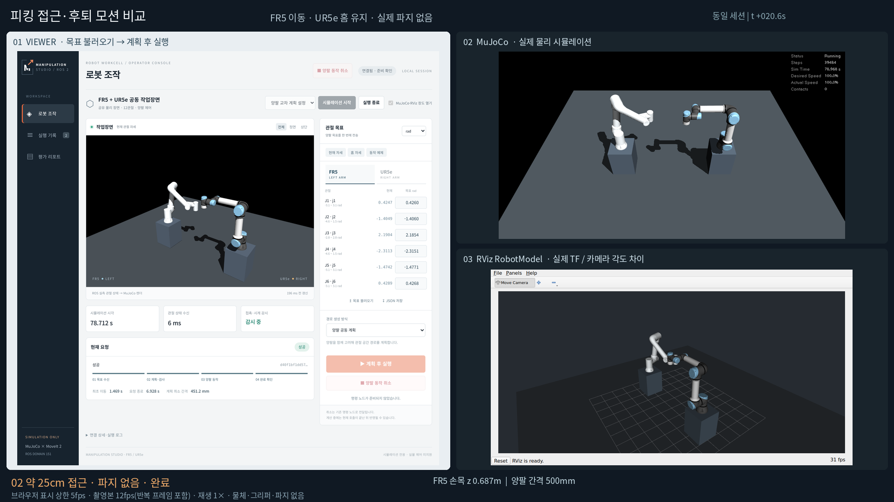

1. 목표 입력·불러오기
오른쪽 FR5·UR5e 관절 목표와 단위를 확인합니다. 영상에서는 목표 파일을 불러와 각 단계의 목표를 채웁니다.
FR5·UR5e 공동 장면의 현재 조작 화면을 정리했습니다. 뷰어에서 관절 목표 파일을 불러오고 실행하면, MuJoCo가 물리를 계산하고 뷰어와 RViz가 같은 ROS 상태를 표시합니다. 이 시연은 집기 위치로 접근하고 후퇴하는 동작이며 물체 파지는 포함하지 않습니다.
목표 입력과 실행 과정을 볼 수 있도록 뷰어 조작부 확대 화면을 기본으로 표시합니다. 아래 버튼으로 같은 촬영본의 세 화면 비교와 모션 확대 영상을 전환할 수 있습니다. 재생 영역은 두 번째 영상(뷰어·MuJoCo·RViz)의 16:9 비율로 맞췄으며, 탭을 바꿔도 높이를 유지합니다. 각 영상은 원본 비율로 표시합니다.
첫 번째 영상은 상단 제목·로고와 하단 안내·로그·푸터를 잘라 조작부를 확대했습니다. 시뮬레이션 시작·종료, 관절 목표·불러오기·실행·취소와 진행·완료 표시는 유지합니다. 같은 촬영본이며 재생 시간과 속도는 그대로입니다. 전체 UI 원본은 아래 링크에서 볼 수 있습니다.
선택한 영상 열기 / 내려받기 · 전체 UI 원본 영상 · 확대 정지 화면 · 전체 UI 정지 화면 · 실제 로컬 조작 화면 열기
이 페이지는 녹화 영상입니다. 실제 로봇 조작은 로컬 서버가 실행 중일 때 통합 조작 화면에서 할 수 있습니다. 영상의 작은 글씨는 전체 화면 재생 또는 정지 화면 확대를 사용하세요.
고해상도 재촬영: 같은 1200×1180 CSS 화면을 DPR 2의 2400×2360px PNG로 직접 기록했습니다. 첫 영상은 원본에서 2400×1796px로 잘라 H.264 CRF 14로 한 번 인코딩했습니다. 촬영용 장면 렌더러도 1920×1280px로 높였습니다. 화면 구도와 16:9 공통 재생 영역은 유지했습니다.

기존 촬영본과 새 촬영본의 관절 목표 영역을 같은 표시 크기로 비교했습니다. 서로 다른 실제 실행이며, 같은 목표의 접근 완료 장면입니다. 원본 PNG와 요청·물리 진단은 별도 보관했습니다.
오른쪽 FR5·UR5e 관절 목표와 단위를 확인합니다. 영상에서는 목표 파일을 불러와 각 단계의 목표를 채웁니다.
오른쪽 아래 실행 버튼으로 요청을 보냅니다. 단계 이동 버튼은 영상의 해당 조작 시점으로 이동합니다.
뷰어 아래 현재 요청에서 목표 수신·계획·양팔 동작·완료 확인을 보고, 세 화면 비교로 실제 움직임을 확인합니다.
별도 전용 세션에 재접속해 촬영했으며, 네이티브 창 체크박스는 다음 시작 옵션입니다. 이미 열린 창의 상태를 나타내는 표시로 사용하지 않습니다. 카메라 각도는 서로 다릅니다. 뷰어 표시는 최대 5fps이고, 12fps 촬영본에는 시간 간격을 유지하기 위한 반복 프레임이 포함됩니다. 렌더링 성능 측정값은 아닙니다.
실제 Chromium 페이지를 DPR 2로 직접 촬영했습니다. /joint_states를 받은 별도 MuJoCo 렌더러의 이미지를 표시합니다. 이 렌더러는 물리를 적분하지 않습니다.
네이티브 MuJoCo 3.12.0의 실제 X11 창. ROS 제어기와 물리 엔진이 명령을 실행합니다.
같은 생성 URDF와 실제 TF를 사용하는 별도 RViz 창입니다. 계획·목표 자세 표시를 제외해 현재 동작만 비교합니다.
| 기능 | 현재 상태 | 범위·남은 내용 |
|---|---|---|
| 공동 장면 | 구현·검증 | FR5·UR5e 12관절, 시작·종료·기존 장면 연결 |
| 관절 목표 조작 | 구현·검증 | deg/rad, 현재·홈·예제, JSON 입출력 |
| 계획 후 실행·취소 | 구현·검증 | 공동 계획·출발 타이밍 조정, 요청별 완료 피드백 |
| 상태·실패 표시 | 구현·검증 | 단계·거리·실패·취소·최근 40개 기록 |
| 라이브 모델 | 구현·검증 | ROS 상태 기반 최대 5fps, 전체·정면·상단 카메라 |
| 연결·안전 차단 | 구현·검증 | 중복 명령·상태/시계·모델·접촉 잠금 검사 |
| 거리 제약 재계획 | 초기 단계 | 일부 홈 복귀 경로가 30mm 조건에서 거부됨. 공간 경로 재탐색 보강 필요 |
| 3D 클릭·TCP 드래그 | 미구현 | 관절 목표 입력 방식. 화면에서 위치를 집어 목표로 지정하지 않음 |
| Pose/IK·단일 모델 UI | 후속 범위 | FR5·FR10·UR5e 단일 모델은 기존 CLI/RViz로 실행 |
| 그리퍼·물체 파지·작업 TCP | 미구현 | 이번 영상에 실제 집기·이송·조립은 포함하지 않음 |
이번 결과는 정해진 목표 4개의 기능 검증입니다. 임의의 자세에서 항상 홈 복귀하거나 최소 우회 경로를 찾는다는 보장은 없습니다. 현재 우선 과제는 실패 사례 재현, 거리 조건을 반영한 재계획, 다양한 시작·목표에 대한 평가입니다.
FR5 기준 프레임은 left_wrist3_link입니다. 오프라인 역기구학으로 만든 관절 목표를 기존 뷰어에 불러왔으며, 뷰어에 Pose/IK 기능을 추가한 시연은 아닙니다. 상부 목표 z=0.94m, 접근 목표 z=0.69m입니다. 관절 공간 계획이므로 이동 중 직선 접근을 보장하지 않습니다.
| 단계 | 결과 | 관측 종료 높이 | 수신 → 요청 종료 | 계획 샘플 최소 간격 |
|---|---|---|---|---|
| 상부 위치 이동 | 성공 | 0.9368 m | 6.284 s | 181.1 mm |
| 접근 | 성공 | 0.6872 m | 6.928 s | 451.2 mm |
| 후퇴 | 성공 | 0.9364 m | 6.925 s | 452.2 mm |
| 홈 복귀 | 성공 | 0.9391 m | 6.293 s | 187.3 mm |
UR5e에는 홈 목표를 유지하도록 명령했습니다. 추종 오차와 MoveIt 목표 허용 오차에 따른 작은 관절 변화가 포함됩니다. 접촉 0은 네이티브 물리 진단 값이며 간격 값은 샘플 검사 결과입니다. 프레임별 캡처 시각과 상태를 보존했지만 세 표시기의 동일 프레임 시각을 보장하는 지연 측정은 수행하지 않았습니다.


요청·관측·물리 진단·촬영 소스 원본 · 파일·구현 해시와 검증 범위 · 목표 관절값과 참조 위치 · RViz 실제 상태 설정
PR #20·#21은 main에 병합됐습니다. 병합 후 main CI와 공개 리포트 배포도 통과했습니다. 이 시연 자료는 해당 병합 이후 별도로 작성했으며 공개 배포된 것으로 표시하지 않습니다.